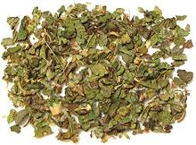

SAFARI
Users
Mint Family
 [Family Lamiaceae]
[Family Lamiaceae]
This family of mostly herbs (but some pretty big trees as well) provides a large number of our most essential culinary herbs, as well as a great number of medicinal plants.
The family includes Mint, Basil, Thyme, Oregano, Marjoram,
Rosemary, Sage and many others. The family is so vast we have divided
it up into a number of major pages. These start with the
Mint Family and branch out from
there.
Plantain Family
[Family Plantaginaceae]
The Plantain family is rather obscure, but includes a fair number
of weedy plants used locally as salad greens and potherbs. It also
provides a commercially important substance widely used as a dietary
supplement, and also in food processing and landscape gardening. Beyond
that, many family members are important medicinal plants. An herb
popular in Vietnam and surrounding regions is also in the family, as
well as one very decorative genus that is definitely Do Not Eat!
The Plantain Family has its own
page.
Sesame
[Til, Gingly (India, Hindi); Ellu (India, Dravidian); Kunjid (Persian); Benne (US South, Caribbean - from African); Sesamum indicum]
This plant, native to Africa and India, is of great culinary and
economic importance, both for it's seeds and the oil pressed from them.
Sesame has a higher oil content than any other seed, and has been
cultivated for oil for more than 5000 years. While huge amounts are
grown in Burma, China, India and Africa, sesame is little grown in the
United States due to the high labor costs involved in harvesting it.
This important plant has its own
Sesame & Sesame Products page.
Olive Family
[family Oleaceae] The impact of this family on early human nutrition and both ancient and modern cuisines would be hard to over-state.
Olives[Olea europaea,]
Native to the Mediterranean basin, from Portugal all the way around to
Morocco, and as far east as Iran, this highly drought resistant tree
has been and remains critical to both cuisine and economy throughout
its range. It not only provides edible fruit (not edible right off
the tree, but after a little processing) and many of the finest
cooking and salad oils available anywhere. but supports an extensive
industry. This important tree has a major page devoted to it on this
site - Olives.
Osmanthus[Sweet Osmanthus; Guihua (China); kinmokusei (Japan); Osmanthus fragrans]
Native to East Asia, from the Himalayas east across southern China to
Taiwan and southern Japan. Dried flowers are mixed with green or black
tea to make an aromatic tea similar to how jasmine flowers are used.
It is also made into a jam-like sauce that is used to perk up bland
porridges, soups and cakes, and used in at least one liquor.
Flower colors range from white through yellow to orange.
Photo by Laitr Keiows distributed under license Creative
Commons
Attribution-Share Alike 3.0 Unported.
Jasmine[Arabian Jasmine; Mo Li Hua (China); Full (Arabic); Ful (Turkish); Malila (Thai); Hoa Nhài (Viet); Jasminum sambac] Native to South and Southeast Asia, this is the variety of jasmine used in China to make jasmine tea. Dried flowers are mixed with green or black tea. The flowers, which have a very strong perfume, open at night and close in the morning. The leaves of one other jasmine, J. subtriplinerve, are
used to make a beverage in Vietnam.
Photo distributed under license Creative Commons
Attribution 2.0 Generic.
Ash[Manna Ash, Flowering Ash; Fraxinus ornus] Ash trees are generally noted for useful wood, not for any culinary use, but one species, native to southern Europe has been, and may still be, tapped for its sweet sap. That one is also noted for its large display of flowers, inconspicuous in most ash trees. The photo is not of that species, but one of my trees (species
not identified), which, unfortunately, has neither showy flowers
nor sweet sap, and is noteworthy mainly for the huge number of baby
ash trees produced by its single winged seeds.
|
Verbenas
[family Verbenaceae] - This family was once much larger, but the AGP genome program has stripped off more than half the genera once assigned to this family, assigning many of them to the Mint family. The Verbena family now contains only a few plants of culinary interest.
Lemon Verbena[Lemon Beebush; Aloysia citrodora] Native to southern Bolivia and northwestern Argentina, this aromatic plant is used both for teas, and to provide a lemony flavor for fish and chicken dishes, as well as marinades, salads, yogurt and beverages. It is also used as a medicinal plant and has a significant array of antioxidants. It is not much sold commercially, but It grows easily in the garden.
It is not, however, a good decorative because it quickly becomes
very rangy with sparsely leaved stems. The photo specimen is still
very young and hasn't ranged out yet.
Koseret[Lippia abyssinica] Native to Ethiopia, this shrubby herb (to 7 feet tall) is now grown
all over tropical Africa. It is used mainly as a flavoring spice and for
preserving butter and oil in Ethiopia, but used as a tea and as a potherb
in other parts of Africa.
Details and Cooking.
Mexican Oregano [Lippia graveolens] This shrub, native to the US Southwest, through Mexico and as far south as Nicaragua, is an important culinary herb in the cuisines of Mexico and Central America. It is also used in the US Southwest, but is still a bit difficult to find here in Los Angeles. Some related herbs, particularly Lippia alba (White Lippia)
and Lippia palmeri are similarly used.
Details and Cooking.
Rica Rica[Moldenke; Acantholippia deserticola] This herb is popular in Chile, and nowhere else, as it grows only in the
deserts of Northern Chile. It is gathered in the wild, but is not
threatened because it is the dominant desert scrub - there are many square
miles of it. It is usually sold dried and in a finely granular form. The
photo specimen is 1/2 teaspoon, so considerably magnified. The flavor is
similar to a mix of dried mint and dried rosemary. Because of it's use in
the famous Pisco Cocktail, it is easily available on-line in North Ameica.
Lantana[Spanish Flag, Shrub Verbena; Lantana camara] This shrub, native to the tropical Americas, has become a very popular decorative here in Southern California. In some other areas, particularly Hawaii, Florida and Australia, it has become a troublesome weed. The foliage is toxic to most animals and eaten safely only by Australian swamp wallabys, making the plant difficult to control. The berries are edible when ripe, when they are a dark metallic
purple, but are just mildly sweet, aren't strongly flavored and have
big seeds, so they're not something to seek out. I sometimes
eat some when I walk down to the Bank of America branch because they
are planted as a hedge by the neighboring condos.
Leaf extracts are used medicinally, primarily for treating stomach
ulcers, and have some anti-bacterial value.
|
Candle Tree
[Candlestick Tree; Palo de Velas, Arbol de vela (Spanish); Parmentiera cereifera of family Bignoniaceae]
This tree, growing to 25 feet high, is native only to Panama, and is
considered endangered there due to logging. It is popular in botanical
gardens and is cultivated to some extent in Florida. The flowers
and fruit sprout directly from the trunks and large limbs, rather than
from smaller branches. The fruit, said to taste like bell pepper and
sugar cane, is fleshy but fibrous, so is often used to make pickles and
preserves rather than eaten fresh. The fruit can be up to 24 inches
long, and is greenish yellow when ripe.
Photo by Cyndy Sims Parr distributed under license
Creative Commons
Attribution-Share Alike 2.0 Generic.
Cuajilote
[Guajilote; Cucumber Tree; Parmentiera aculeata syn. Parmentiera edulis of family Bignoniaceae]
This tree, growing to 32 feet high, is native to southern Mexico and
south to Costa Rica. It is now an invasive in Queensland Australia.
The flowers and fruit sprout directly from the trunks and large limbs,
rather than from smaller branches. The fruit, said to taste like sugar
cane, is fleshy but fibrous, so is often used to make jams rather than
eaten fresh. It is also cooked stuffed with meat. The fruit can be up
to 12 inches long, but more commonly around 7 inches, and is greenish
yellow when ripe.
Photo by Strongilocentrotus distributed under license
Creative Commons
Attribution-Share Alike 3.0 Unported.
Devil's Claw
[Unicorn plant, Martynia, Proboscis flower, Ram's horn; Ibicella lutea of family Martyniaceae]
This plant, native to Brazil, now grows wild in Southern California
and Florida. It is sometimes planted as an ornamental for its showy
flowers and weird seed pods. These are designed to hook large animals
so as to be carried far and wide. The pod in the photo is about 2 inches
long, not counting the horns or the stem. When the pods are young and
green, they can be cooked similarly to okra and eaten, or made into
pickles.
Photo by Thiago R. B. de Mello distributed under license
Creative Commons
Attribution-Share Alike 3.0 Unported.
Mangrove Trumpet Flower
[Tui, Tue, Tuy (Tagalog); Diya daga (Sri Lanka); Dolichandrone spathacea of family Bignoniaceae]
This small tree is native to southern India and Sri Lanka, and east
through Southeast Asia to the Pacific Islands of New Caledonia. In
Thailand, these flowers are stir fried with garlic and served as a side
dish, and they are also used in sour fish curries.
Photo by Xufanc distributed under license Creative Commons
Attribution-Share Alike 3.0 Unported.
Morro
[Mexican Calabash; Jícaro, Morrito; Crescentia alata of family Bignoniaceae]
This small tree, to 26 feet, is native to southern Mexico and Central America as far south as Costa Rica. Flowers sprout directly from trunks and large branches, and produce very hard cannon ball like fruit to 4 inches diameter. The hard shell protected the seeds so only very large animals, probably Gomphotheres, could eat the fruit. When they died out, the tree became endangered, as no other Central American animal could break the shells.
Humans showed up just in time (though they may have contributed to
extinction of the Gompotheres), finding the shells useful and the seeds
edible and high in protein. Young fruit is sometimes eaten or made into
a drink, and a stable, neutral flavored oil can be squeezed from the
seeds. When horses were re-introduced to the Americas, they learned to
stomp on the shells to break them and eat the pulp inside. This has
spread the seeds more widely, insuring survival of the tree. The seeds
are heart shaped, about 0.29 inch across, 0.35 inch long and 0.07 inch
thick (7.4 x 9.0 x 1.8 mm) with a vaguely licorice-like taste. They are
used to make horchata, an aguas frescas drink. Note:
"Morro" is also used as the name for seeds of the unrelated
Bottle Gourd, also used to make horchata.
The photo specimens were purchased from a large Hispanic market in
Los Angeles (Burbank) for 2016 US $5.58 / pound.
Jacaranda
[Jacaranda mimosifolia of family Bignoniaceae (Bigonias)]
You can't actually eat Jacarandas, but they have become such a successful
large decorative worldwide, and quite notably here in Southern California,
they deserve a place on this page as a fine example of a large Lamiale.
This one lives just down the street from my home. Jacarandas originated
in Brazil.